I am aware of how annoying people can be. And even if it may not work, I'll still say
this is no direct message towards the people and is only
brought up to showcase how horrific the Nintendo homebrew-piracy projects have been.
I still interact with some of these communities so that should cover me. No? Oh whale. 🐳
Wii Shop Hell: What Now?
June 30, 2026
Continuing from the first part about various failed shop projects, this blog goes into what actually had use!
But not yet! We are still in the
Great Silence
Now that I had no shops to take part in, I was left in silence on my own server. LaunchShop still lived on for a bit judging by its site.
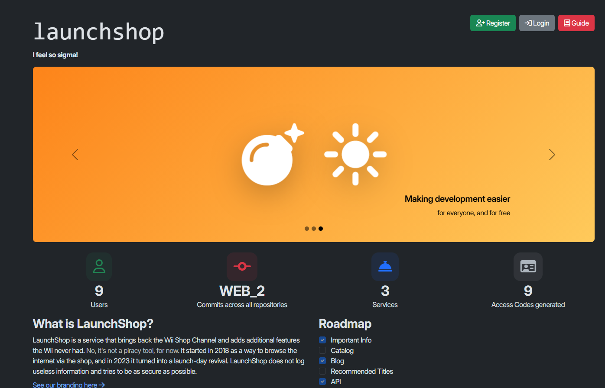
Until it didn't. See that blog there?
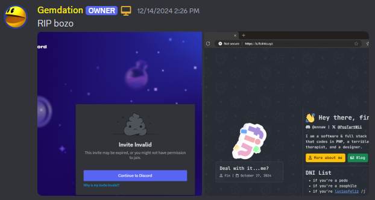
The blog "Deal with it...me?" went on the topic of Fin thinking it was a stupid idea to make a Wii Shop revival, even saying WiiLink's News Channel was bad too.
In late January 2025, I think this was around the time I published The Wii Shop Experience to my then-Google Sites blog. I promoted it in my
Discord server and the Reviive owner was not happy with it.
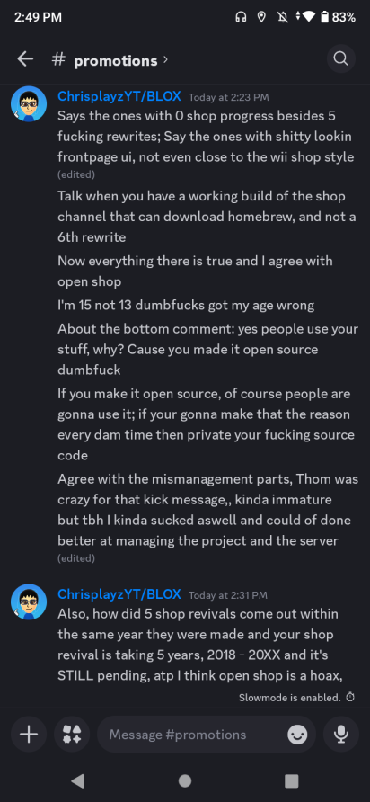
Even then, there was still
nothing.
Shoplifting
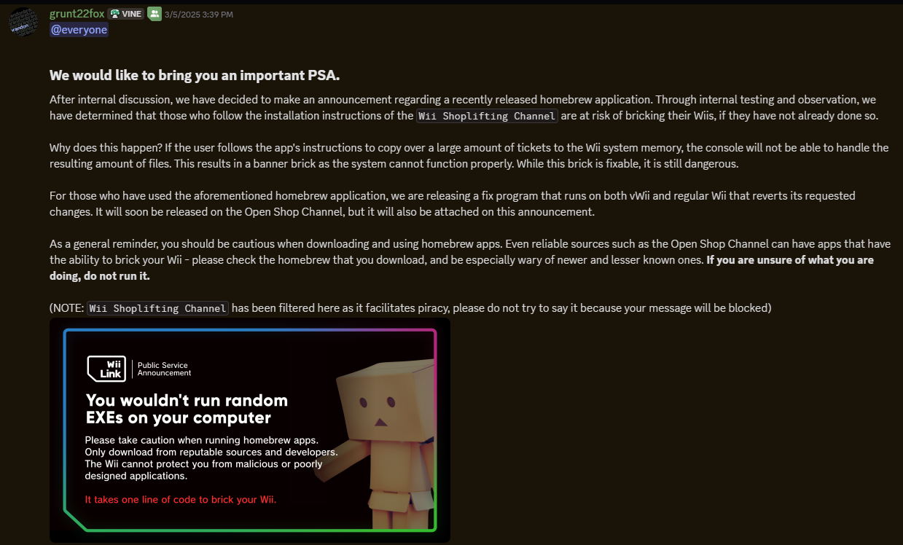
Breaking the silence, I was alerted (March 5, 2025) by WiiLink's PSA about Larsen's WiiShoplifter tool and-wow what a callback. Anyways, the post made me aware of the tool and the fork it had.
The WiiLikeToParty tool! A better, non-bricking homebrew app used to get real Nintendo-hosted software. I used it for a few titles until the grand mart came out.
WII★MART
A week later, I was told about the "Wii Shop Channel Revival". And they were having mod applications. Guess what I did after I still known about so many shop projects failing?
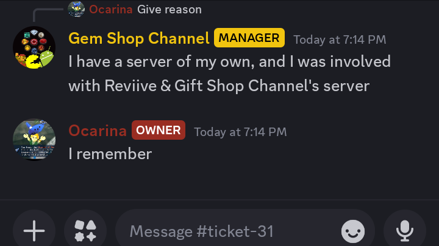
What? Am I just gonna miss out again?
Jokes aside. WiiMart stood out in a lake of Shops, not only because of its name, but...
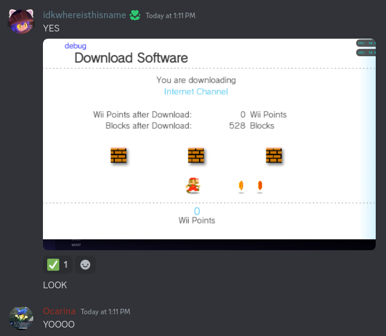
It actually downloaded!? So I just needed to wait instead of rushing to vaporware for so long? Though since many people rushed to WiiMart it was already beginning to wear on the owner's personal VPS.
We were needing an upgrade fast before it was too late, and we started a poll of the options available.
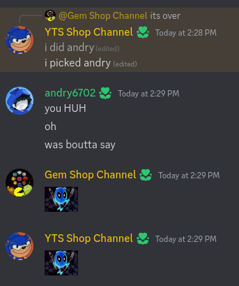
Okay that image isn't really the poll but it is funny and it was a few messages below the poll, it counts.
So we looked towards the options, and guess who happened to be there at the right time.
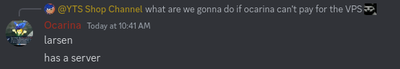
Well if it isn't Mr. Vallecillo himself. Hoster of MarioCube, a huge Jellyfin instance, and Discross. And if we were to get him as a hoster, we would be locked to him.
I should add that my opinion of him wasn't so bad. Though it wasn't the greatest as the people of the WiiLink always had a stigma against him. I still carried a bit of doubt with me around him.
Of course.
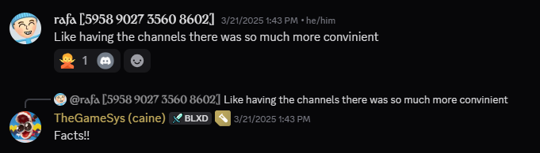
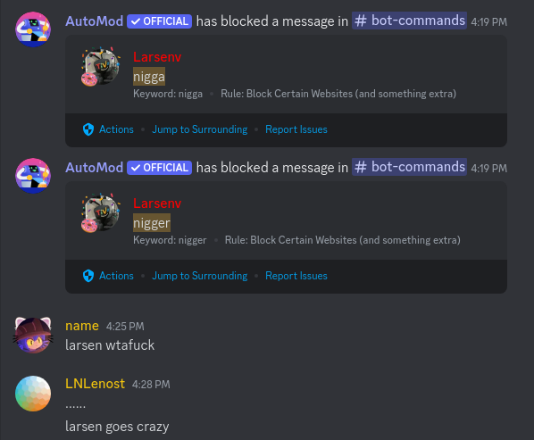
Apparently that wasn't the first time Larsen had used AutoMod for the n word, either.
But anyhoo, here's a little hint from Mart's next era.
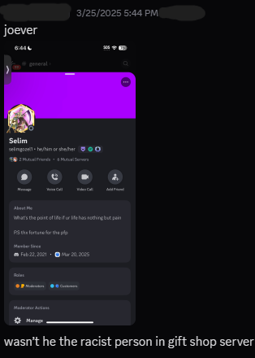
And onto WiiMart again, it could even gift software!
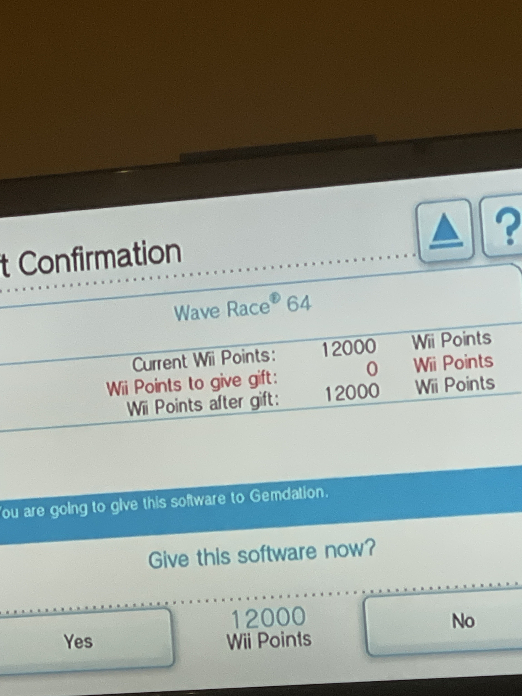
To which...
Anyway one thing I look back on WiiMart was the early design of the server. Like with these interesting people icons taken from the Ambassador Program.
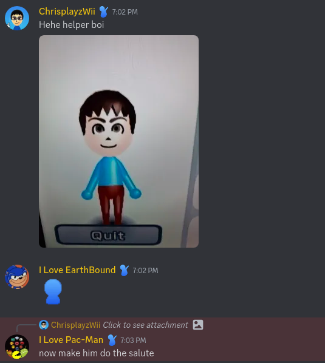
Don't they look very...totalitarian?
And Larsen was certainly showing his true colors by this point.
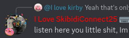
listen here you little shit, Im getting tired of you asking the same question over and over
Which by no means were attributed to only him. There were tons of members that seemed outright stupid, which were probably kids.
Bonus image found.
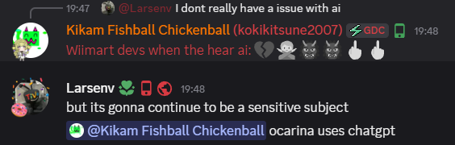
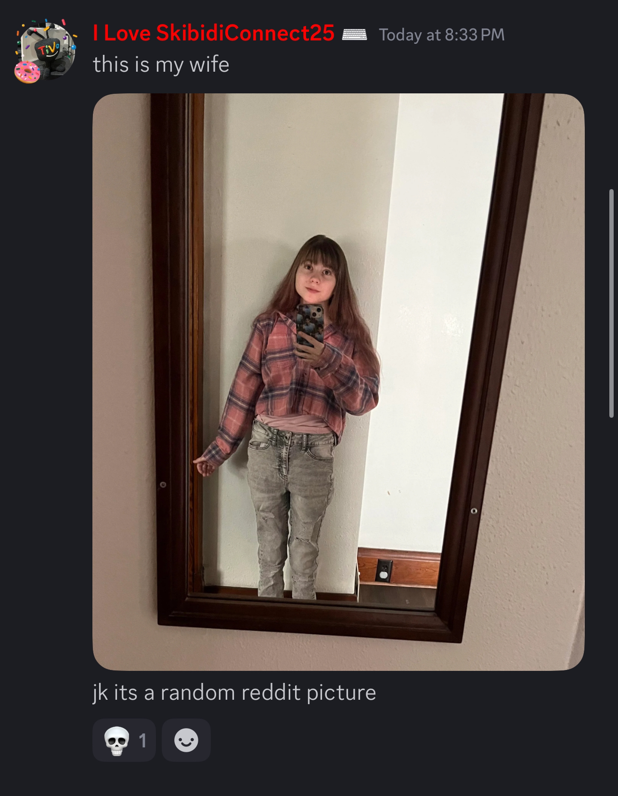
And, oh no, do I have to talk about it already?
The WiiMart Installer was a homebrew tool for managing WiiMart installations. Forked from YAWMME,
it was posed to help users easily install WiiMart and it's 2006-banner edition.
And it was a damn nightmare.
When I designed this little homebrew thumbnail I was not aware of how much of a hazard it would become. I just tested it sometimes, and it would fail because of TViewer or whatever Thom said it was.
Moving away from that a bit, back to the main shop, we had-
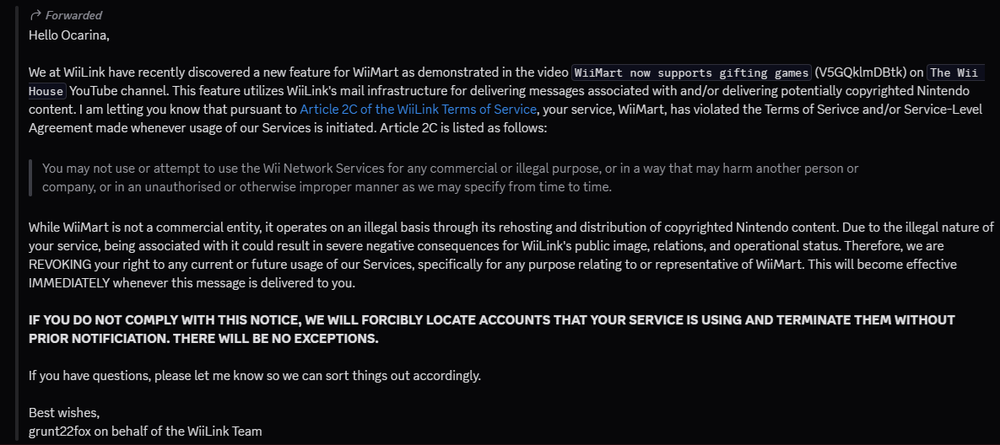
A cease and desist? From an unincoporated group? Nah, I'm kdding mostly. Projects aren't entitled to work with one another and especially if they become linked in a community stigma such as piracy.
Even if Nintendo isn't actively hunting down Wii brewers like its the 2010s. The thing that was really humorous to me was the tone.
as demonstrated in the video WiiMart now supports gifting games (V5GQklmDBtk) on The Wii House YouTube channel.
IF YOU DO NOT COMPLY WITH THIS NOTICE, WE WILL FORCIBLY LOCATE ACCOUNTS THAT YOUR SERVICE IS USING AND TERMINATE THEM WITHOUT PRIOR NOTIFICIATION. THERE WILL BE NO EXCEPTIONS.
Are we in a courtroom? What is with those code pieces? What is so unprofessional about youtube.com/watch?v=V5GQklmDBtk? I guess that is part of the NOTICE.
So gifting did go boom. And while the community was in chaos again, another problem came out of the dark.
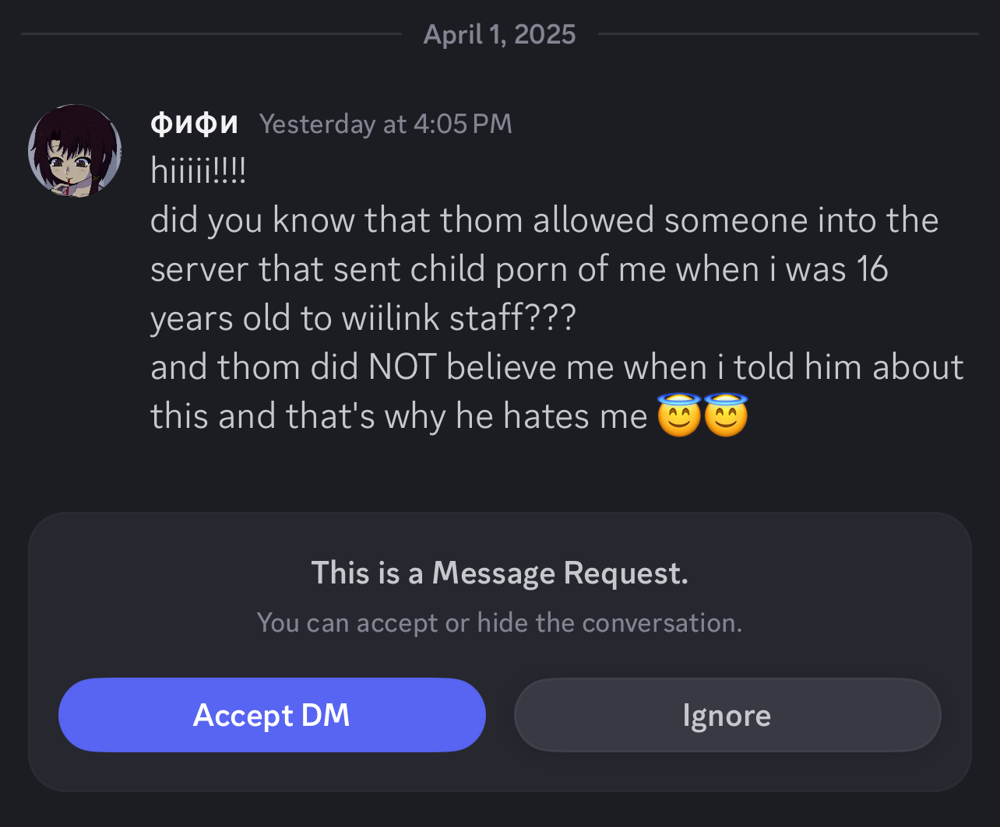
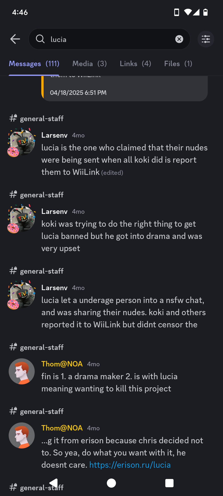
Since we're talking about her again, let's go over what I think happened. Going based of information from New Shop and the DM above, here is the Lucia situation.
Lucia sent the explicit pictures of herself to other people in another project before
At the time of sending those messages, she would be 17.
This is important too as she should know not to just send nudes to anyone. Hell, even I knew way younger!
Koki received the unsolicited nudes reported them to WiiLink.
They were presumably blurred, or not. We can't really know.
It is unknown why she did this, either as a blatant mistake or a trap to hold over people.
Given that Lucia has been a degenerate, I guess it is not that far out of the question.
Also throughout conversations, she has a rather unaplogetic tone as if she has power over people, but that is only speculation.
It is also unknown what member correlates to Thom, as Koki was not in the server yet.
On with the less degenerate stuff, the website is here from me! Visitable here.
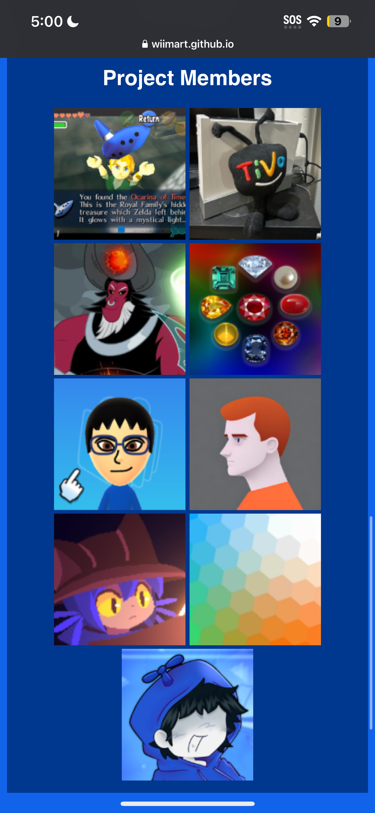
Looks like it matches the WiiMart branding right? Yeah, this one got scrutinized heavily and lead to a Wii Shop-inspired revamp later.
Wait is that MJD?
Michael MJD and Emails
"The Wii Shop Channel is Back Online in 2025! Revival Project Demo"
Well I'll be! My wordmark and banner appeared in a notable YouTuber's video! I was told about this video from another staff member and I rushed to see it. Someone else rushed to see it and led to the following situation.
Ready for this?
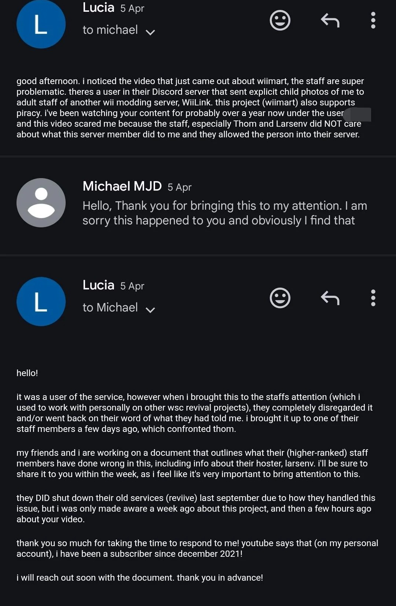
In this, WiiMart was described having "staff [that] are super problematic" to which, actually wasn't that false.
But it again mentions "the user" who sent underage explicit pictures to WiiLink, we know this was for the nature of reporting, but it is brought up in this context to defame.
As another defamation reason, the "supports piracy" reason is brought up. If you've been comprehending this blog[s] then you would know that Lucia was a staff member of both Reviive and later LaunchShops.
Though both did backpedal on piracy, it is important to note that she was bringing it up to defame.
Thom and Larsen are mentioned not caring but I assume it was because of the lack of evidence, and Thom's egotistic nature, if I'm being honest.
Larsen took the deletion and emails of the video the hardest as he thought Michael hated him, which would be a mega-drop of the things he already has going for him.
And about Lucia using the situation to trap people,
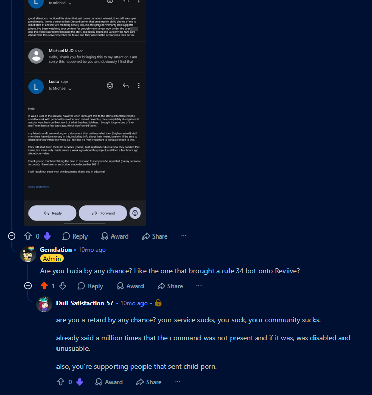
I would think it is safe to say so.
Before the Storm
Back to the non-degenerate stuff, the website got it's very own Wii Shop-inspired revamp! Visitable here.
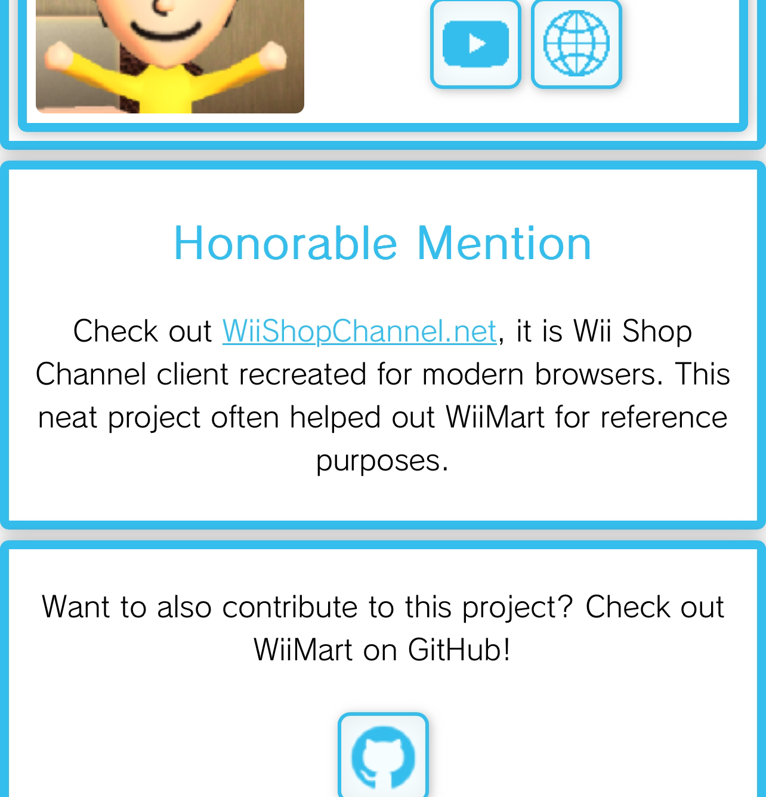
Keeping my classic div rows but polishing it with a pretty nice theme. Around this time Selim had bought the wiimart.org domain and work had begun on the individual support inboxes.
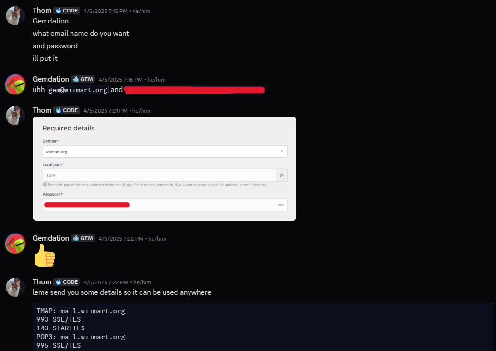
Censored just in case. Now let's go on a Thom tangent. I have this image of Thom ready to abuse his power because of someone trying to expose him.
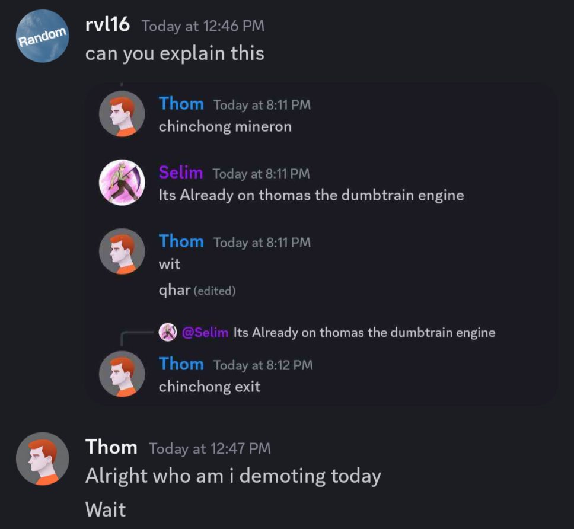
And then we have his times bumping heads with Larsen, an equally irritable person. I believe this was about the concern of having too many staff members than needed, which was true.
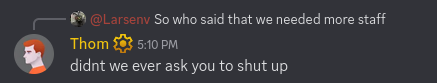
For a little bonus, I'll throw in how we kinda had to defend him to keep him as hoster. And he couldn't kick or ban after a certain time because he used to go crazy power-tripping over people that didn't like him.
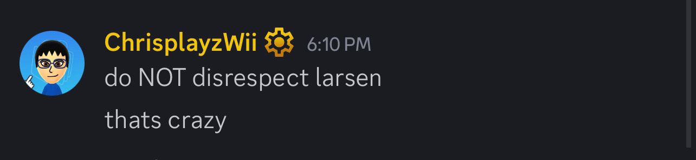
And I remember these fights about WiiMart making its own WiiConnect24 to fill the void that WiiLink had left.
This would eventually lead to his demotion planning...
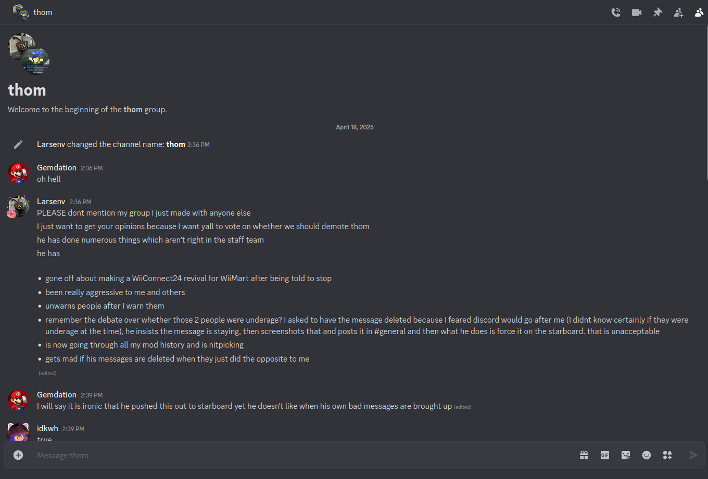
...and presumably raged so hard he had to get banned as well.
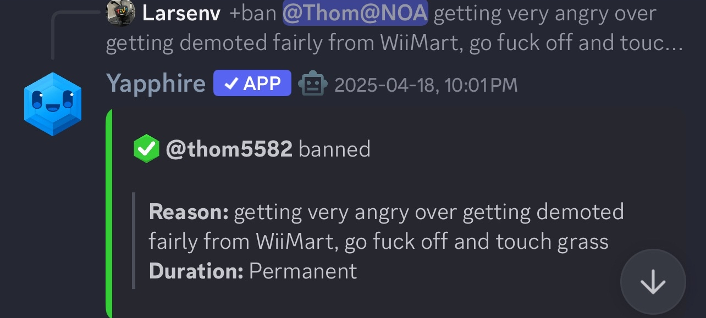
And I was getting in on the demote-planning too, there was a fellow in the staff that had personal troubles with his parents about WiiMart. About WiiMart.
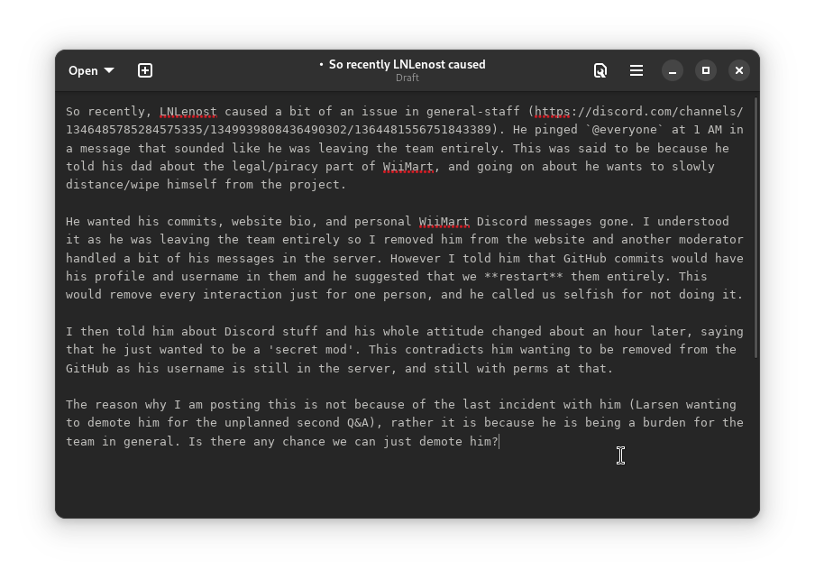
The Storm
And just when I thought I was gonna be stuck on this project with Larsen, magic came. His own doings!
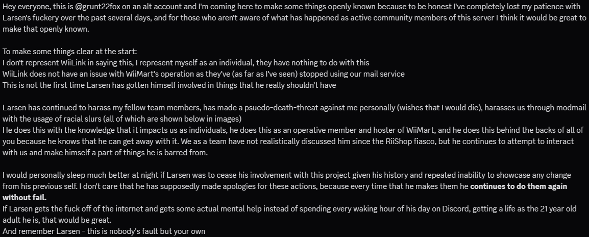
You see, he was quite resentful of WiiLink and even the new staff members of it. I don't remember what happened but Grunt's message got out to people, leading to backlash in chat that we had to deal with behind the scenes.
So the rug pull we were doing on him was in desperate need of moving quickly. And while we tried to make him not be suspicious of us, we banned a lot of people under his orders. At some point during the transfer to Selim, one of the moderators spoke out.
No offense Larsen, but we think you may be the problem.
He then caught onto what is happening to him. I don't remember what happened after that, but he sure did get banned.
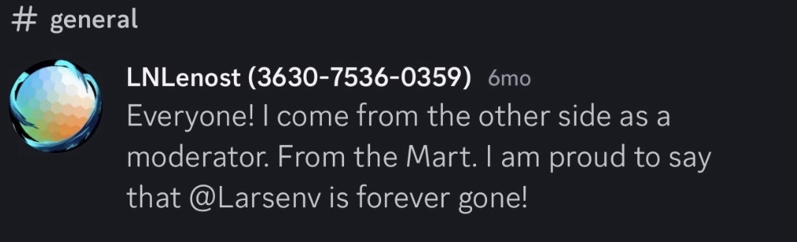
Reign of Selim
New host incoming!
I can't tell when we happened to switch to the GitLab instance ("WiiLab") but we weren't as willing with it as the higher ups (Selim and Thom) thought. I personally didn't want it as it would be off of the actual GitHub platform, thus contributions will be shuttered.
Not to mention that it would be in the hands of Thom, to which we were lied to by saying he wouldn't have that much access.
The days of managing for WiiMart would feel like they go so fast, and before I knew it, I had set it as my main server.
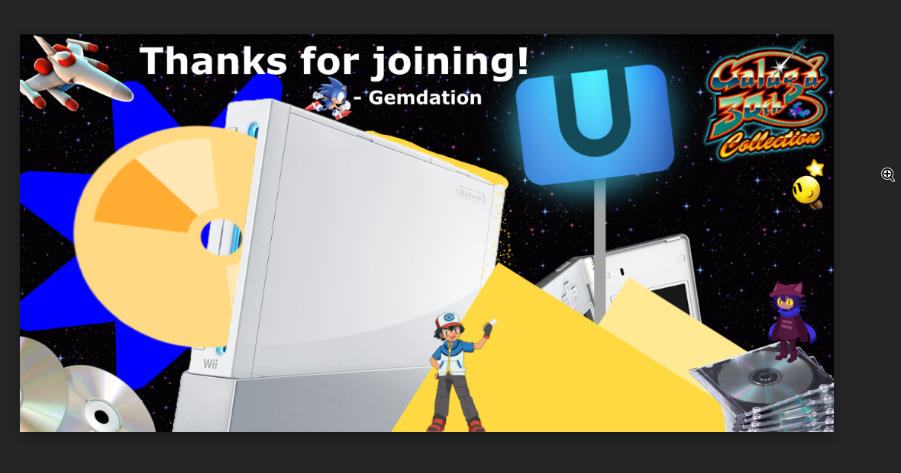
Thus ending my server's streak of being active since 2024. At this point I for sure put my whole faith in WiiMart.
To which I kinda regret now.
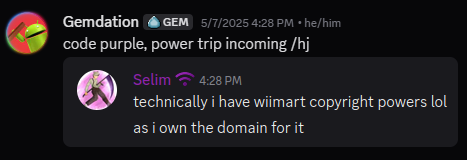
But onto that later, some absolute momenet happened when Thom's WiiMart Installer was pbulished.
Installer Fiasco
A couple of days after I added the Installer to the website (May 2, 2025), a striking post caught my eye in the Discord support forum (May 8, 2025). Someone had a rough brick with the Installer. You see, it was something with Korean Wii consoles that Thom either forgot to implement or fail to copy from YAWMME.
And I'll just spoil the surprise for you right now, it was a staged brick, meant for the sole purpose of getting the homebrew app off the site, and possibly getting proper credits for YAWMME, but I doubt it.
Aep (under his alt username, common) played the role of a kid who barely knew about the Wii and Harry played the role of a homebrew hero who knew the magic unheard of way to unbrick.
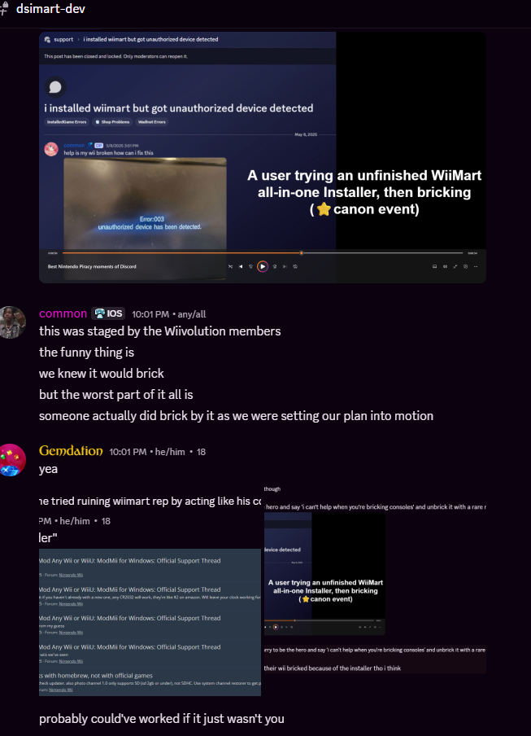
I must say, they did a pretty good job at exposing how Thom is.
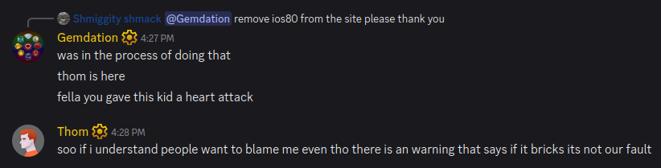
I had a doubt ever since I saw that Aep/common was a GBAtemp user with some knowledgeble information. This was finally confirmed when we met again for DSiMart debugging in 2026.
I called Harry egotistical, because he definitely was for that scolding "I won't help piracy services but I can't help when you're bricking Wiis." ROMphobia always plagues people who want to act better than everyone else.
Though, a seperate brick did actually happened that I never got to see.
And still, this situation was on Thom and Selim's fault as I remember them bringing the software out when I didn't even get it to download anything on my Wii U's vWii.
But nevertheless, WiiMart lived on.
Begin the DSi
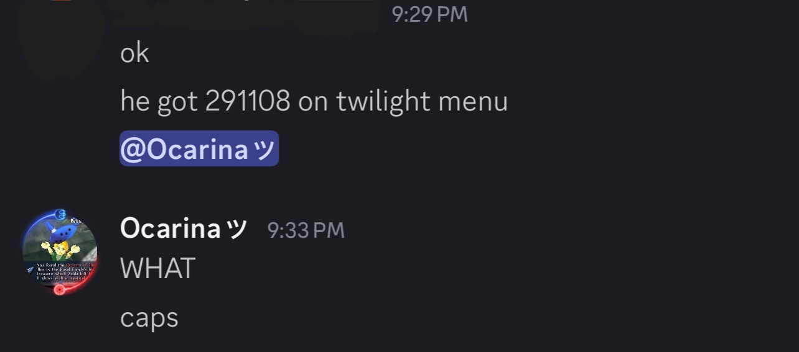
I was told from my friend about DSiMart, finally. I was a little excited as the owner had finally struck outside the vaporware chamber with WiiMart, so they'll do it with DSiMart too. Right...
Here began the start of developers not knowing what they were doing.
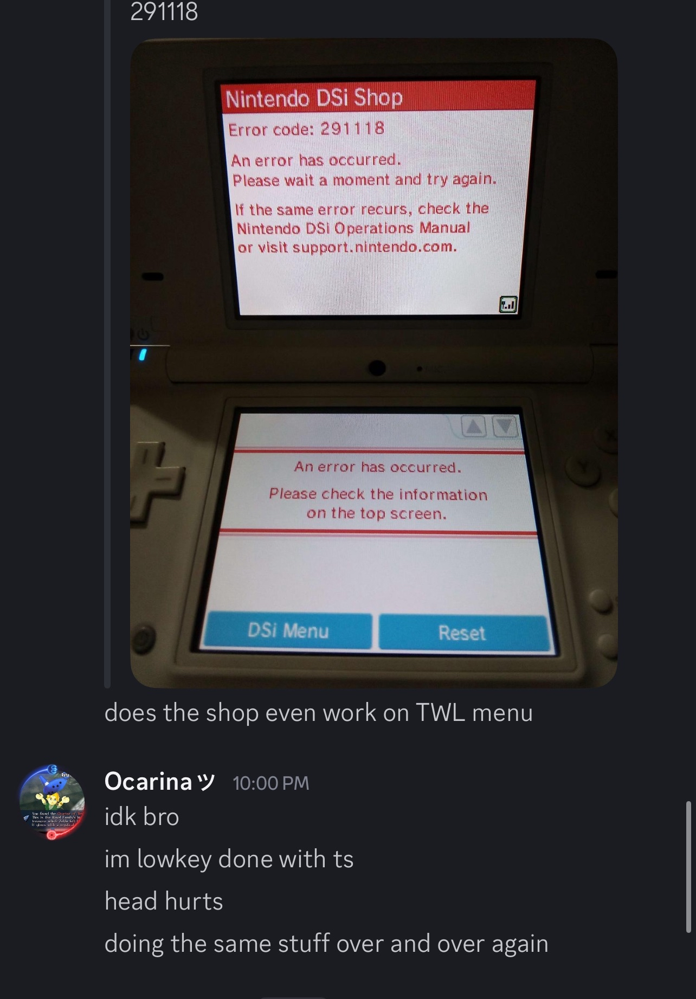
Just kidding, I won't be that hrash. But I noticed when Wii Shop revivals had Open Shop's patcher to use as a base, while DSi Shop had nothing, therefore DSi Shop revivals also had nothing.
And hey! I think I found where our SDK usage started. Well, not really.
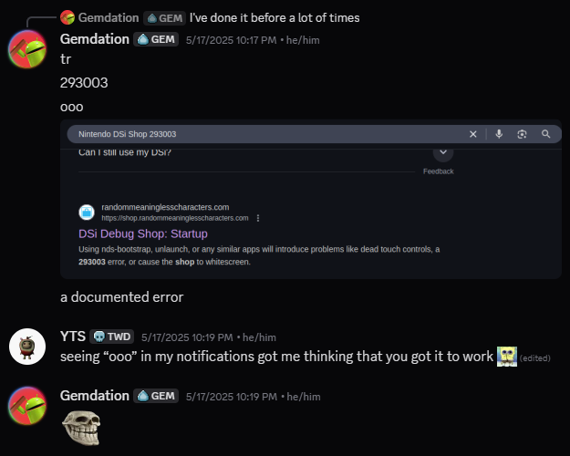
Check out this early DSiMart branding.
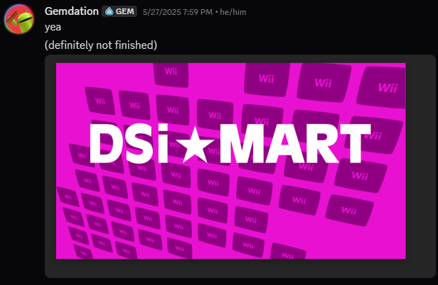
This wasn't even the first time I had made something for DSiMart, as I had made a "Evil DSiMart" icon and banner for the WiiMart server to use on April Fool's.
To think that we had one day for Fool's is crazy, because it's like we had everyday!
Marty Down
One thing that always bugged me under Selim is that, not that the server was out a lot, but they just had to announce it to everyone with the most comical ways possibly.
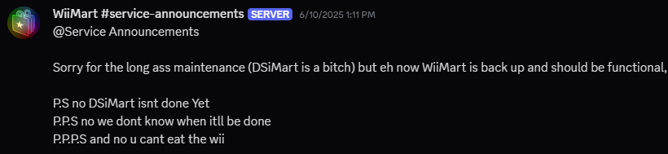
Sorry for the long ass maintenance (DSiMart is a bitch)
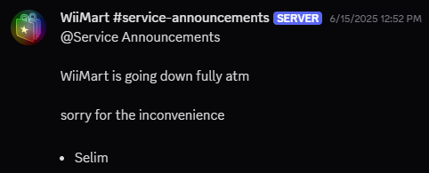
WiiMart is going fully down atm
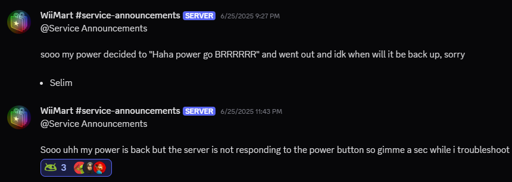
Haha power go BRRRRRR
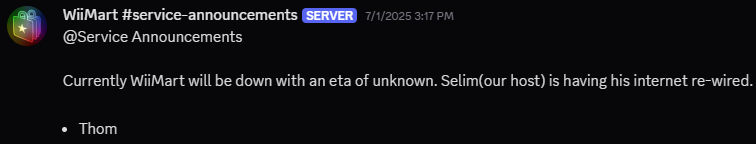
[...] having his internet re-wired.
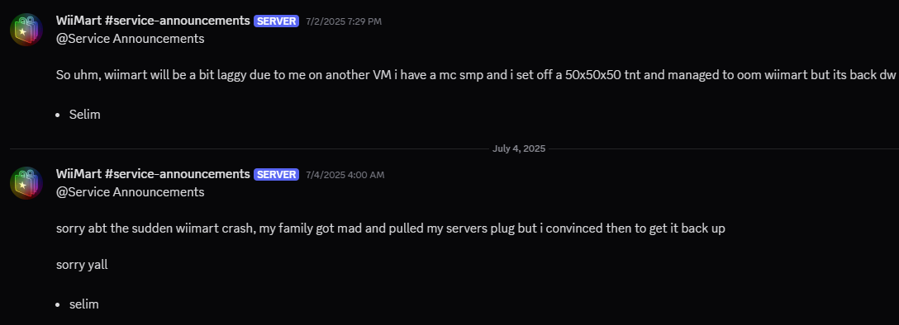
[...] i set off a 50x50x50 tnt and managed to oom wiimart [...] my family got mad and pulled my servers plug
I could go on. The worst one (later in 2026) was when Selim's city had a power outage and...
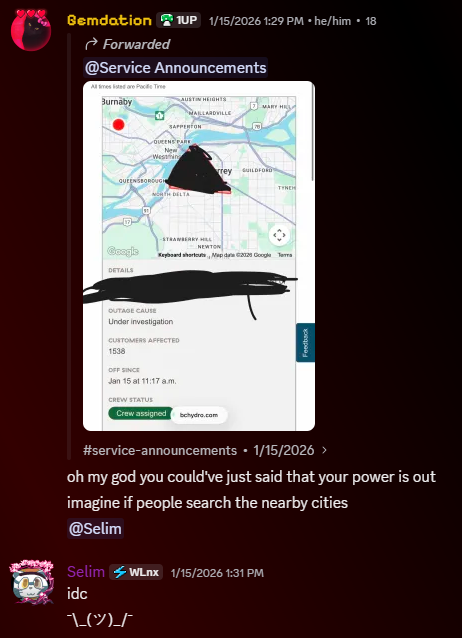
He posted the outage map and censored the town like that is gonna help?! My outrage did cause the dumb self-doxxing message to be taken off but those stupid outage messages were practically a staple of WiiMart at this point.
I remember one time Selim and Thom began muting people for making fun of Selim's absurd outage reasons. As if they literally weren't part of that problem.
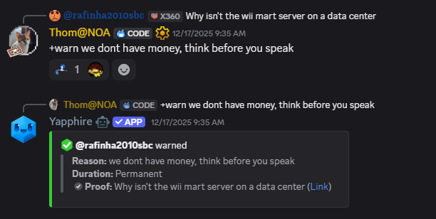
Even questions were punishable! And on the topic of them being corrupt staff, let's go to the WiiMart store and buy the
Selim Pass (Duo Plan)
Also known as the 'hoster pass', it allows the current hoster of WiiMart near instant access to make major project decisions, even if it means overriding staff and community responses.
One of the early times were Selim inviting their friends to WiiMart and then instantly give them moderator. And when we had actual application forums, they wrote "idk selim asked me to join to get mod".
I think around some point of people getting tired about the outages, one fella looked thecheese.io. That was Selim's domain we were using and he happened to have other stuff hosted there openly.
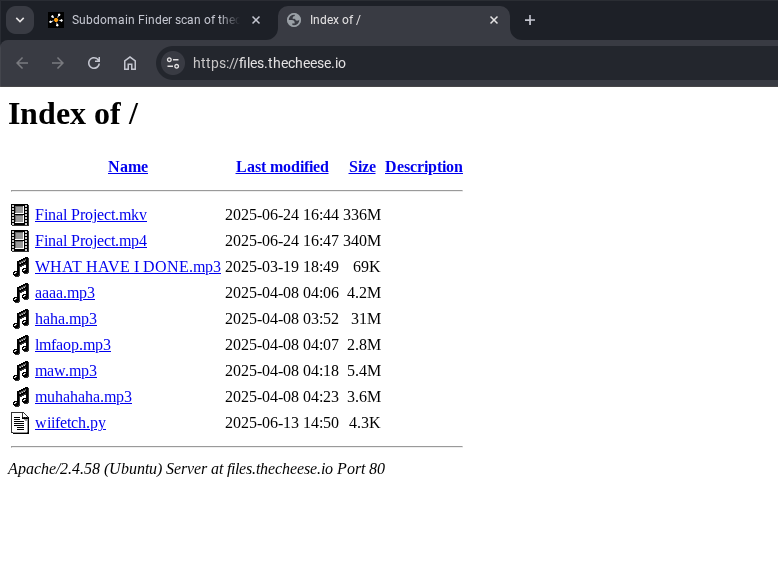
I think I remember this from the WiiMart Staff group chat, it was about how horrid the outages were and it just turned into another Selim pity party.
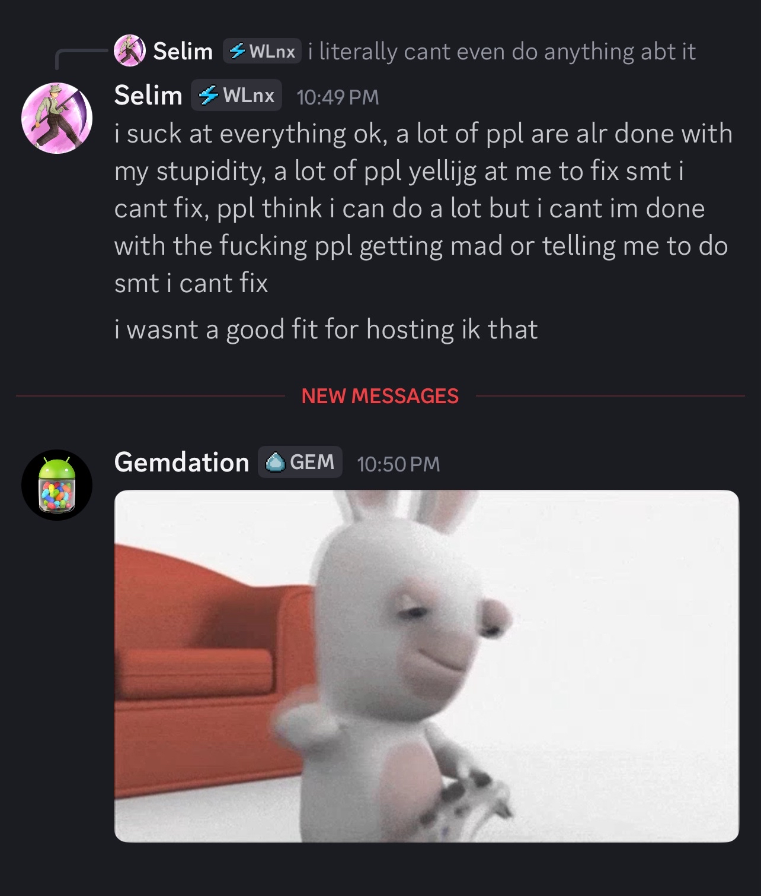
Call me mean, but this gets tiring after the 5th time.
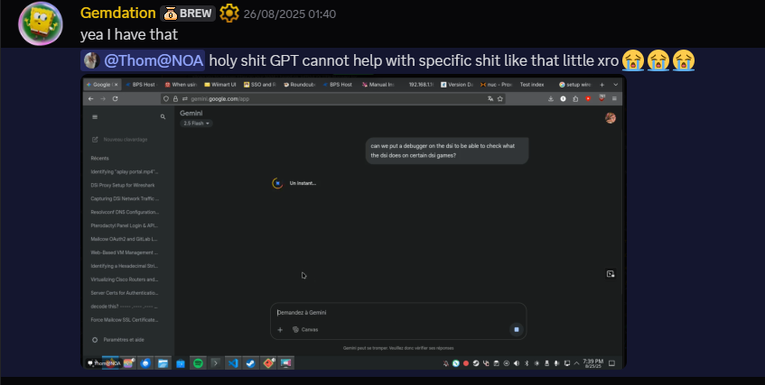
And over on Thom's side of the higher ups, we was, uh, being a professional! The most professional professional who ever professed. And he also wasn't going to give up his baby
WiiMart Installer, the one that actually had no use in exisitng alongside the WiiMart str2hax fork.
And both of the higher ups weren't too keen on being called vibe coders, because one of our long-time admins ended up getting demoted after he called a project they work on, Mii Shop, AI-coded.
Given what I've seen, it was probably true. Though he did not take it well.
I should mention that he left the server many times at this point, had a variety of situations that caused each one.
Back on the option of getting a VPS,
It is a no.
And we're working on DSiMart again! Great.
I assume I was pretty bummed out again because I made this Best Nintendo Piracy moments of Discord video.
One day (December 15, 2025) something came up when we were telling Thom not to just ban people without a reason. The person in this case did have an actual reason to get banned. But Thom talked and ugh,
it gets so irritating. It is like the important people always have some weird shit that is always with them.
And whata hoster. You mean to tell me you need oss-auth.thecheese.io for school?
You're pulling my shopping bag, right?
Even I'm looking back right now and thinking "this happened?" But here's some stuff to ease the anger. I found an old screenshot of the GitLab instance.
As much as I really didn't want GitLab, I did make most of the icons it used. This next topic is gonna set in a new era for WiiMart. I'm not ready.
Beginning of the End
It was actually just an ordinary day, I was doing something when all of a sudden I got a huge wave of a pings from a server in the top of my row, WiiMart.
Screenshot from a WiiMart member.
I couldn't believe it. It just went like that because someone let in a fake account, and...
Of course. Of course it just has to be you.
After a bunch of pings trying to get the owner online, dealing with Sapphire, and making sure everyone got the community alert, the server was back to its regular state.
Well, after one of our admins decided to finally truly leave and go on an identity crisis. Shoutout to him via this masterpiece I made.
And by the way, we were still on that annoying GitLab instance still even after everything. We were just told that "certain software relied on it." Until Thom rug pulled someone.
Apparently Thom rug pulled a kid's Wii U eShop revival, which was being hosted on Wiilab. And honestly to the surprise of no one as he stomps out everything until he gets his way, and it's everyone else's fault for "pushing him".
Though, this time, he actually got something against him. Selim, finally held Thom accountable, for once.
I was actually so excited I ended up making this video and sharing it in a private server.
Hopium. Though, the justice can never last. I learned from Ocarina that, even if Thom is to objectively never be trusted with management software, he can still cling on with his Pass.
Here's words straight from the owner.
Though he did eventually get demoted. It wasn't without a bang. Let's just go on to the next section.
DSiMart Returns to failing
While DSiMart ROMs were being patched and tested to no avail, the team finally got outside contributors from Brewtendo.
For some reason, Selim wanted the server to be separa-
It's Thom.
Yep, it's Thom.
I belive this came after wanting the higher ups wanting to merge Brewtendo and WiiMart, as it would be easier to manage. I'll put my opinion on that with a Discord quote straight from me.
my issue mainly was "who is gonna be running this large project?" cause it would've been Thom who is an unstable fellow but is a friend of Selim/ThatOneYoshi, so they're gonna be vouching for him and not a new owner like Ocarina either
So skipping that fiasco and the long Selim Pass-dodging debate about it, (May 5, 2026) a duo came out of nowhere to boast about someone.
The work was by Pinecone, who was later invited to share his contributions in an odd way. DSiMart would get the contributions but so would ReeDSiShop, I believe. Sounds odd because it was as it introduced a hurdle for both projects to progress. Which they didn't even do.
Life of Mart
In another unordinary day, we got the news that Selim was no longer hosting.
they just don't listen to us if it doesn't benefit them like they were about to merge with Brewtendo, and it almost would have happened if I didn't say my points against the idea then a few days later Selim doesn't want to be a WiiMart hoster anymore and I just saw that as time to leave
I made the cross-posted statement and that was it.
I was free. I didn't have to worry about WiiMart Wednesday, when the server was going to overheat and melt, if bots were popping up in the server. It felt a little nice and sad, this was right after I spent a year contributing since Day 2 of WiiMart.
My friends followed suit and resigned too and lucky for the users, Pinecone was ready to step in, and with his mod application it seemed like he brought in some more Brewtendo folks.
The End
My own folks didn't really like it, and called them Brewtendo-colonizers, but the truth is I'm not upset. Hell, I'll be so happy for them if they
get WiiMart working again so they won't be stuck in the same damn Wii Shop Hell I've been in since 2024.
And to be honest, it doesn't seem that good for them.
I still wonder if Open Shop Channel is ever going to release their client.
Now that the main "aintreadingallat" essay is over I'll go over some honorable mentions
So WiiMart did have some original revival channels hosted at one point, these were YouTube and some WiiConnect24 channels.
The YouTube revival creator (ErrorExe) was exposed for doxxing someone, so I banned him and asked for his channel to be delisted.
This incident also spawned a meme I made to mock ErrorExe.
Dakotath's select WiiConnect24 channels were the Nintendo Channel and the Everybody Votes Channel. The reason for these delistings were because of racist actions in a Discord chat.
I'll honestly miss the events and what I did for them.
Before heading into 2026, I got people to submit icons for what would be WiiMart's December 2025 icon, only to end up using them all as an animated icon.
Oh, and people did not like those WiiMart Wednesday sneak peeks over time. I increased the difficulty higher each time to the point where they wouldn't even solve it!
My special sneak peek events started with a UnbelivaBoat game to buy a shovel to "reveal" the games buried underground.

{kind=link}
{kind=link}
{kind=link}
{kind=link}
{kind=link}
{kind=link}
{kind=link}
{kind=link}
{kind=link}
{kind=link}
{kind=link}
{kind=link}